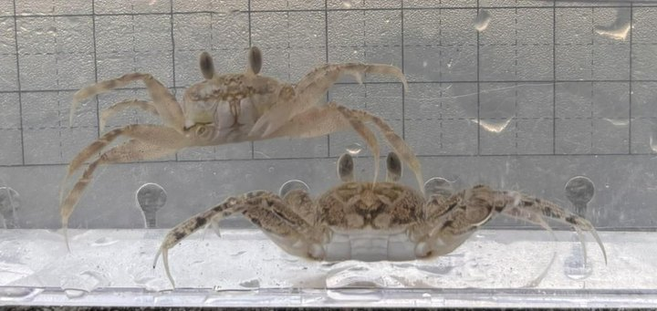
スナガニ砂蟹
Ocypode stimpsoni

協力萩ジオツーリズム協会
菊ヶ浜は地元の人に親しまれている海水浴場ですが、砂浜がどのようにできていて、どんな生き物がいるのかは、実はよくわかっていません。変わりつづける砂浜の今のようすを調べて記録し、これからの変化を見ていくための土台とします。調査レポート #01 より
菊ヶ浜は、阿武川が日本海にそそぐ場所にあり、阿武川が大雨のたびに山から運んできた砂がたまってできた砂浜です。
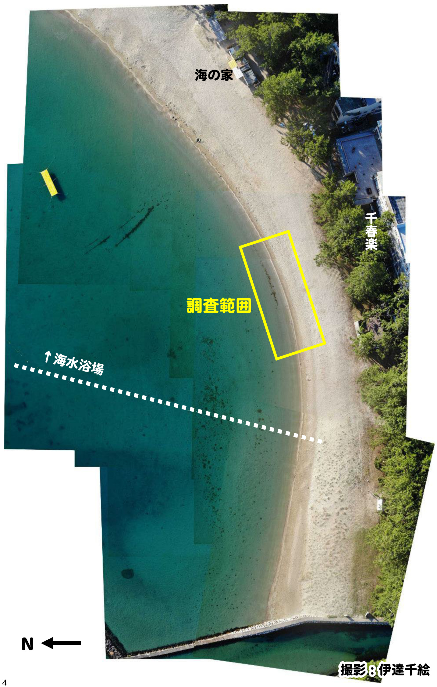
裸足で砂浜を歩き、地形や砂の状態（感触・温度・もよう）を観察し、4つのゾーンに分けて名づけました。
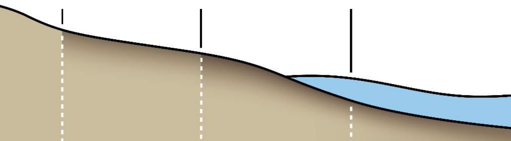


生き物の気配が多い3つのゾーンで採集して記録しました。第1回（2025.7.26）は8種25個体、第2回（2026.7.18）は17種74個体。2回を合わせて20種が確認されています。カードをタップすると、くわしい情報が見られます。

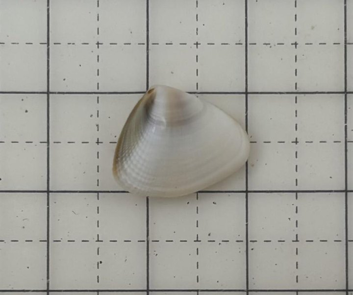
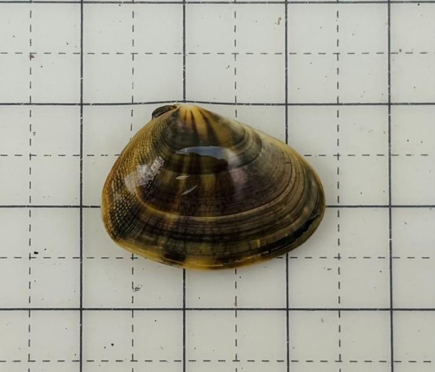
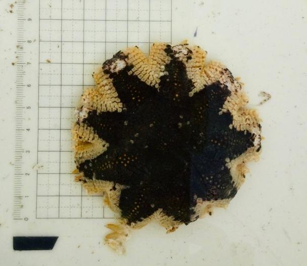
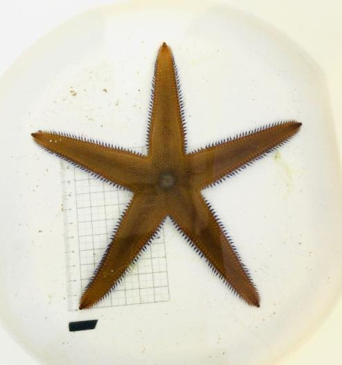
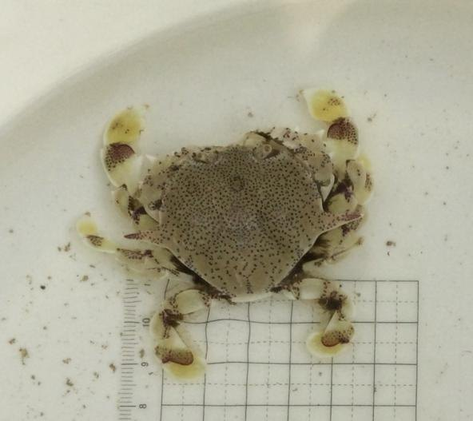

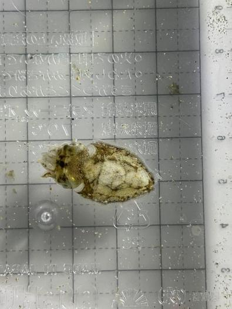

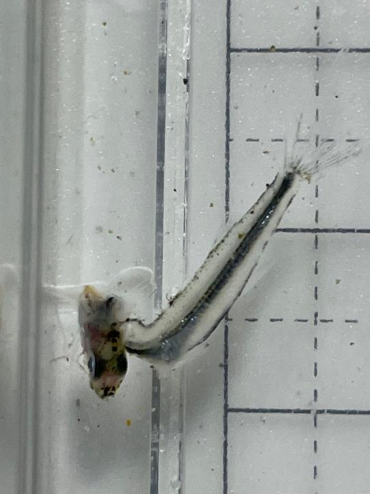
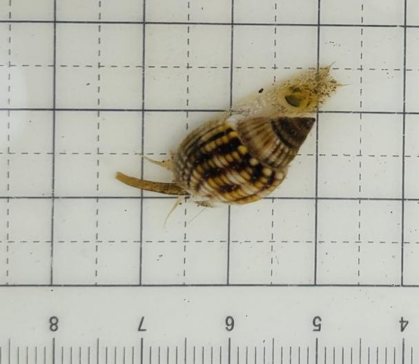
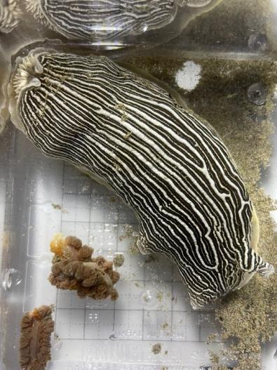
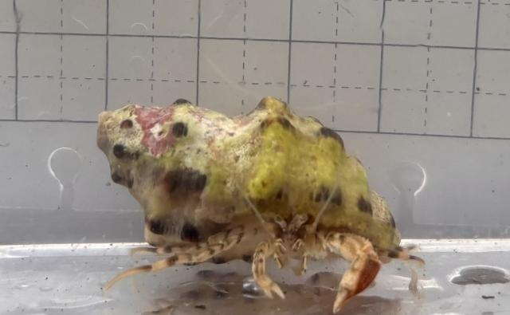
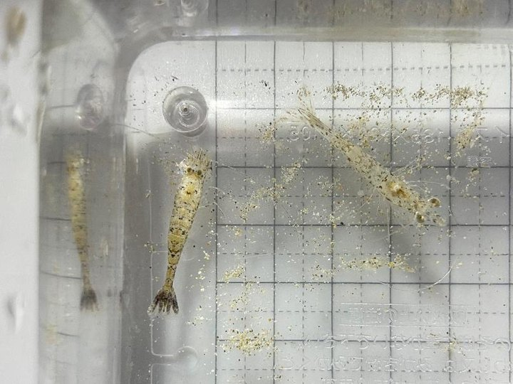
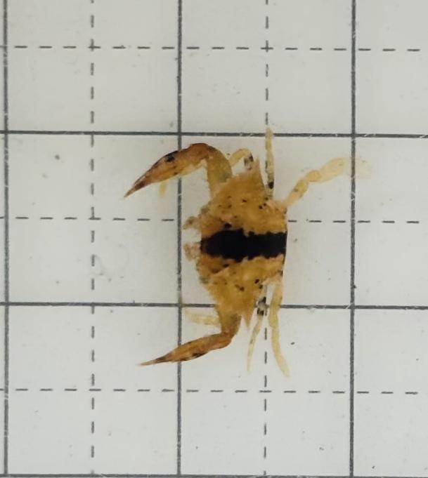
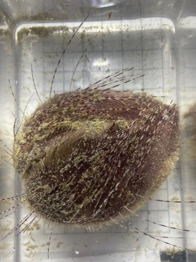
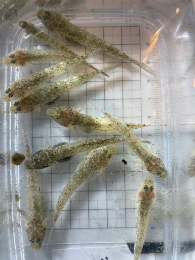
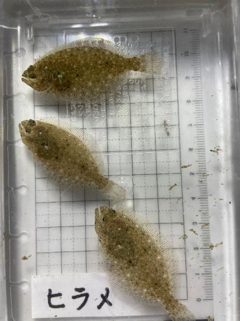
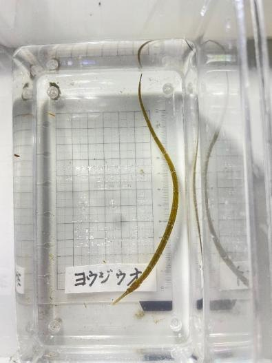
全国の海辺では、砂浜が少しずつやせていく変化が知られています。その背景には気候の変化だけでなく、川の上流の開発や土地の使い方など、大地と人の関わり方も関係しています。それでいて菊ヶ浜が今どんな状態にあるのかは、まだ十分に調べられていません。2年分の調査でわかったことを並べます。
裸足で歩いて砂の乾き方と地形をたしかめると、この浜は4つの環境に分かれていました。サラサラ・カタカタ・シャバシャバ・ボコボコ。2年続けて、同じ分け方で見分けられています。
2回で20種。生き物は水中のボコボコゾーンに集中し、第2回はここだけで11種53個体、全体の7割を占めました。乾いた前浜とは顔ぶれがまるごと入れかわります。
ナミノコガイは第1回シャバシャバ、第2回カタカタ。キンセンガニは第1回ボコボコ、第2回シャバシャバ。同じ種でも、年によって見つかる場所が動くことが見えてきました。
歩いて数十歩の範囲に、これだけちがう環境が隣り合っています。そして、それぞれに別の生き物がいます。だとすれば、砂の動きや水際の位置が少し変わるだけでも、そこで暮らす生き物は入れかわるはずです。人の関わりが浜にもたらす影響は、思っているより大きいのかもしれません。
けれども、今がどんな状態かを記録しておかなければ、変わったことにも気づけません。この浜の「今」を数字と写真で残しておくことが、これからの変化に気づくための出発点になります。